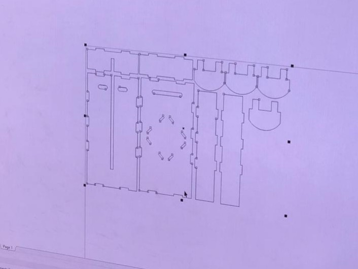

Blog
Journey of our project:
We were handed a problem by our teachers to make an automatic way of sending paper messages to another person:O
Day 1
|  |
On the second day, we were given lectures on how to work with servo and DC motors on the Arduino microcontroller. This would allow us to work out the launching method for the plane launcher. In our case, we used a pair of counter spinning wheels. We discussed designs for the plane launcher. Additionally, we researched designs for the paper planes to be launched. We sought inspiration for the launcher from various online sites and tutorials. We used Autodesk Inventor to design the plane launcher. The final design was laser cut from a piece of acrylic in FabLab, which housed various machines that we can make use of for project work like this. We ended up with a design that looked like a shoebox. Other groups designed launchers like a mechanical launcher based on a ballista and a launcher that resembled a missile launcher. All in all, the events of that day gave us the opportunity to negotiate and debate, since the final day would be when a competition would be held to compare the launchers. We obviously wanted a good result, and along with a time constraint, we had to stay on task instead of getting carried away arguing about designs. |
Day 2
| This day was hectic... |
Day 3
|
On the third day, we finalised the design of our paper planes launcher in AutoCAD. We did minor tweaks in the design for our ease to construct the launcher. We added puzzle joins along the edges sized at 15mm by 3mm to have an edge to join multiple panels to together with ease.
Plywood, cardboard and acrylic was the three material that was provided during the construction. We chose acrylic over the other materials provided was mainly on the durability properties it had. Acrylic is more impact resistant with do stand the test of time. Building the launcher out of it would give our launcher great aesthetic with ease of fabrication. We proceed on to the laser cut our launcher in the fabrication lab. It was our first time using the laser cutting machine. With the help of a staff over at the fabrication lab, we learn some basic of the machine. For example, the files format we needed to convert our drawing into. This was to ensure the software the machine used was able read our drawing to ensure accurate dimensions. We also learnt that placing our drawing closer together before cutting can reduce on material wastage. The laser cutting of our acrylic pieces did not take long. We had 10 pieces cut out within 5 minutes, that’s quick! In the fabrication lab, we cut out the mounting bracket for our switches. To prop up our switches at an angle, we heated up the mounting bracket we cut at 45 degrees. To bend the acrylic, we first must heat up along the markings we have made on the acrylic on a heating machine. The heating machine have a wire heated up, placing the acrylic above the hot wire will soften the acrylic and allow us to bend it to our angle. We drilled two holes of 7.5mm to secure the switches on the mounting brackets. The mounting bracket was to be mounted on the base plate we had. The red switch on the right will be launching the paper plane forward. The black switch on the left will be swiveling our rotating launcher between the 180 degrees left and right. Our construction was not able to be completed in time and only launching the paper plane forward was functioning correctly. With a little more time for this project, we are confident that our paper plane launcher construction will be completed. This project has allowed our group to develop creative thinking, teamworking skills and the “never say die” attitude. It was no easy task to create a paper plane launcher within 3 days. Our team had put in pride and determination to complete the assigned task to the best of our ability. We believed the Engineering Academy Tryouts has allowed us to do what intrigues engineering students. We will be looking for more to take part in the Engineering Academy. |